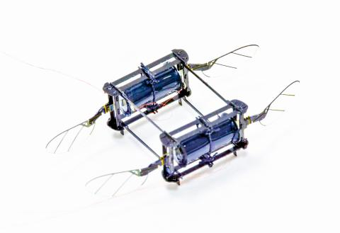

벌처럼 나는 소형 로봇 첫 비행 성공
연성 구동기가 날아다니고 멈추는 비행 제어
하버드대 공학 및 응용과학대(SEAS)와 뷔스(Wyss) 생체 모방 연구소 연구팀이 개발해온, 부드러운 인공근육으로
구동되는 탄성 마이크로 로봇(RoboBee)이 첫 비행에 성공했다. 이 로봇은 소프트 구동기가 비행을 제어하는
최초의 마이크로 로봇으로, ‘연질 근육’을 사용함으로써 벽에 부딪히거나 바닥에 떨어지거나 혹은 다른 로보비와
부딪혀도 손상을 입지 않는다.
논문 제1저자인 유펭 첸(Yufeng Chen) SEAS 박사후 연구원은 “마이크로 로봇 분야에서는
탄성이 뛰어난 소프트 구동기(soft actuators)로 모바일 로봇을 만들기 위한 경쟁이 치열하다”고 말하고,
그러나 이 분야 많은 사람들은소프트 구동기의 출력 밀도(power density)가 낮은 데다 제어가 어려워 비행 로봇에 적용하는데
회의적이었다”고 지적했다. 그는 “이번에 개발한 구동기는 공중을 날아다니는 호버링(hovering) 비행을 할 수 있는 충분한
출력 밀도와 제어능력을 가지고 있다”고 밝혔다.
유전체 탄성중합체로 연성 구동기 제작
연구팀은 출력 밀도 문제를 해결하기 위해 데이비드 클라크(David Clarke) 재료공학과 교수실에서 개발한 전기 구동 소프트 액추에이터를 채용했다.
연구팀은 전극 전도성을 개선해 이전에 유사한 로봇에 사용된 강성(rigid) 구동기와 동일한 500헤르츠로 구동기를 작동할 수 있었다.
연성 구동기를 다룰 때의 또 다른 과제는 시스템이 잠겨 불안정해지는 경향이 있다는 점이었다.
이 문제를 해결하기 위해 경량의 기체에 수직의 견인줄을 매달아 구동기가 잠기지 않도록 했다.
날개와 구동기 수 늘려 성능 향상
이 소형 로봇에서는 연성 구동기를 손쉽게 조립하고 교체할 수 있다. 연구팀은 다양한 비행능력을 시연하기 위해 여러 모델의 연성-구동 로보비를 제작했다.
먼저 두 날개를 가진 모델은 지상에서 이륙할 수는 있으나 추가적인 제어는 할 수 없다는 단점이 있었다.
날개 네 개와 두 개의 구동기를 장착한 모델은 한 번의 비행에서 여러 번의 충돌 사고를 회피하고 복잡한 환경에서 비행할 수 있었다.
논문 공저자인 엘리자베스 패럴 헬블링(Elizabeth Farrell Helbling) SEAS 전 대학원생은 “소형 경량 로봇의 장점은 외부 충격에 대한 복원력이 강하다는 점”이라며,
“연성 구동기는 전통적인 구동기에 비해 충격을 잘 흡수할 수 있기 때문에 추가적인 이점이 있다”고 말했다.
이런 장점은 예를 들어 허물어진 건물 더미 속을 날아다니며 수색과 구조를 할 때 유용하게 활용할 수 있다는 것.
“고성능 인조 근육 나오면 로봇 활용성 무한”
연구팀은 이 소프트-구동 로봇의 효율 향상을 다음 목표를 잡고 있다. 현재 이 로봇은 기존의 비행 로봇에 비해 효율이 크게 낮은 편이다.
논문 시니어 저자이자 뷔스 생체 모방 공학연구소 핵심 교수진인 로버트 우드(Robert Wood) 석좌교수는
“인체 근육과 같은 속성과 전기적 활성화 기능을 갖춘 연성 구동기는 로봇공학에서 엄청난 도전”이라며,
“만약 고성능 인공근육을 만들 수 있다면 우리가 만드는 로봇의 활용 가능성은 무한하다”고 강조했다.